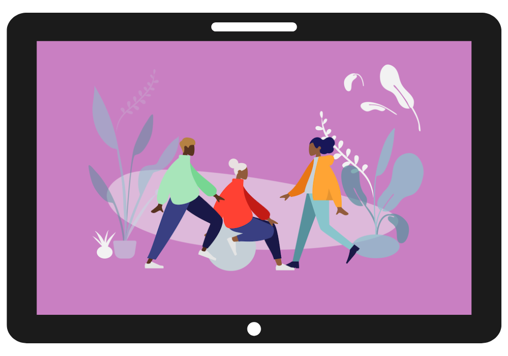

Welcome to Safely Social!
Our priority is keeping YOU or YOUR children safe from the dangers of Social Media. The current state of Social Media education for young people is confusing, outdated, and not coherent at all, so we want to change it. Our site is dedicated to providing life-saving information that will bring awareness to just how easily a dangerous situation can occure
The best course of action is prevention, and to do that we need effective education


Recent Cases
Within the UK there have been many cases of online cyberbullying, Grooming etc. Which can lead to a declined mental health and has had an increased rate on suicides within the UK, especially with teenagers.
At 'safely social' we feel that having a safe website for children and adults is extremely vital to not only help teenagers whilst there navigating and learning through these new technologies, but also adults learning about how to prevent them could have a significant effect on how we deal with these situations.
An estimated 69% of children who receives sexual messages, Received them in form of photos or video's
Nearly 3/4 of children aged 13-15yrs who have receieved sexual messages have recived them more than once in 12 months!